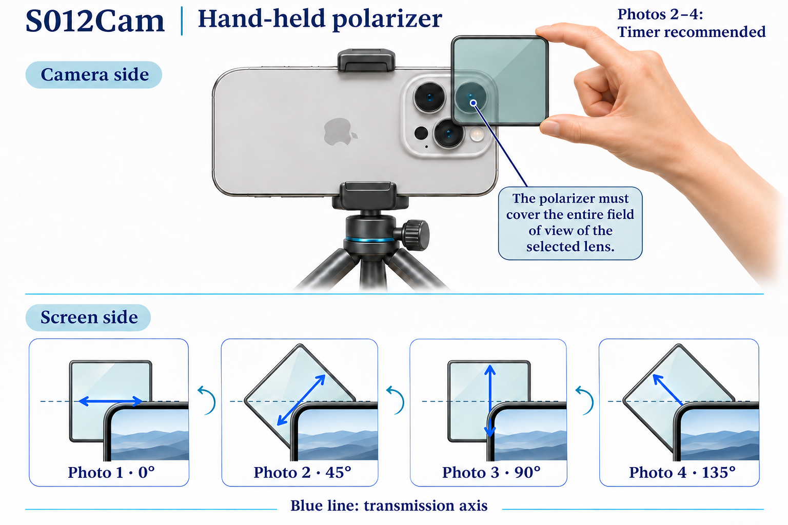

Chapter contents
User manual
Hand-held polarizer
More help


- Mount the iPhone on a tripod or secure it on a firm support. Choose a still scene.
- Hold the linear polarizer by its edges in front of the selected camera. The entire field of view must pass through the clear area of the polarizer at all four angles. Use a large enough sheet and hold it close to the lens without touching it. Keep fingers and the filter frame out of the view. Keep the polarizer roughly parallel to the back of the phone. Check the preview at each angle for blocked edges or dark corners.
- Set the transmission axis along the long edge of the landscape iPhone for 0°. The edge of the filter is not necessarily its transmission axis.
- Set Photos 2–4 (11) to Timer. The default interval is 2 seconds. Use a longer interval if you need more time to turn and settle.
- Press the shutter for photo 1. From the screen side, turn counterclockwise to 45°, 90° and 135°, measured from the starting position. Follow the prompt, reach each angle before the next photo, and hold still.
- Do not move the iPhone. If the phone and scene stayed fixed, choose Calculate Without Aligning after photo 4 (Fig. 18).
Hand rotation makes the angle, tilt and position hard to repeat. This method can show polarization patterns, but its values are not a quantitative reference. Securing the phone and using Timer reduce handling disturbance; they do not remove polarizer angle errors. This limitation applies only to a hand-held polarizer with hand-estimated angles. With a correctly fitted and calibrated Polarizer Rotator, captured at its indexed positions, the measurement values can be used as a reference.
Next: choose a capture mode, then the calculation method.